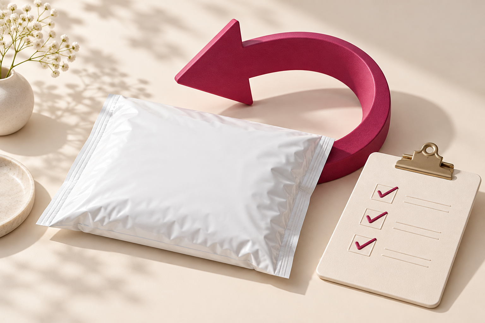

← 特典一覧に戻るまなのメルカリお役立ち
返品・クレーム
対応ガイド
返信テンプレートと、匿名返品の進め方。
匿名返品の
進め方も解説
まなの解説ガイド ｜ 返信例文・対象条件・手順
まながまとめた解説です。メルカリ・返品くんの公式ガイドではありません。ロゴ出典：返品くん公式サイト
困ったときほど、
確認してから、ひとつずつ。
返品希望が届いたら、まずは内容を確認。返信の言葉と手続きの順番を、必要なところから見られます。
すぐに結論を出さず、まず3つを確認。① どこに、どんな問題があるか
② 商品説明・掲載写真・発送前の状態
③ 相手の希望と、これまでのやり取り
「ご不便をおかけして申し訳ありません。状況を確認させてください」と、落ち着いて確認から始めましょう。
01
場面別の返信テンプレート
［ ］を書き換え、確認できた事実に合わせて使います。
該当する例文がありません。「すべて」を選ぶか、別の言葉で探してください。
SCENE 01
不具合の連絡を受けたとき
内容がまだ分からないときの最初の返信。
ご連絡ありがとうございます。
ご不便をおかけしており、申し訳ありません。
状況を確認したいため、どの部分にどのような問題があったか、詳しく教えていただけますでしょうか。
受取評価は行わず、取引メッセージでご連絡をお願いいたします。
使うときのポイント最初から原因を決めつけず、商品説明と発送前の状態も確認します。
SCENE 02
状態を詳しく確認したいとき
傷・汚れ・破損の箇所を確認したいとき。
ご連絡ありがとうございます。
確認のため、問題のある箇所が分かる写真と、詳しい状態を取引メッセージでお知らせいただけますでしょうか。
こちらでも商品説明・掲載写真・発送前の状態を確認いたします。
使うときのポイント相手の申告と、自分が残した記録を照らし合わせます。
SCENE 03
こちらの不備が確認できたとき
説明漏れや見落としが確認でき、返品対応を提案するとき。
ご確認いただきありがとうございます。
こちらの確認不足により、ご迷惑をおかけして申し訳ありません。
返品にて対応させていただきたいと考えております。
返品方法を確認のうえ、取引画面の案内に沿って手続きを進めてもよろしいでしょうか。
使うときのポイント返品の方法も含めて合意してから申請します。
SCENE 04
返品の理由を確認したいとき
「サイズが合わない」「イメージと違う」などの連絡を受けたとき。
ご連絡ありがとうございます。
返品をご希望とのこと、確認いたしました。
商品説明と異なる点や、返品をご希望される理由を詳しく教えていただけますでしょうか。
内容を確認したうえで、対応についてご相談させてください。
使うときのポイント理由を聞く前に、購入者都合と決めつけないようにします。
SCENE 05
説明と相違が見当たらないとき
説明・写真・相手の申告を確認しても認識が一致しないとき。
ご連絡ありがとうございます。
確認したところ、［該当する状態・寸法など］については商品説明の［記載箇所］に記載しております。
説明と異なる点がございましたら、具体的にお知らせいただけますでしょうか。
認識に相違がある場合は、事務局にも相談しながら対応いたします。
使うときのポイント「絶対に返品不可」と断言せず、根拠となる記載と相手の認識を確認します。
SCENE 06
強い口調の連絡が来たとき
感情的な応酬を避け、確認する内容を絞りたいとき。
ご連絡ありがとうございます。
状況を確認し、適切に対応したいと考えております。
［確認したい点］についてお知らせいただけますでしょうか。
いただいた内容と商品の記録を確認し、必要に応じて事務局へ相談いたします。
使うときのポイント脅迫的な言葉などがある場合も言い返さず、やり取りを残して事務局へ相談します。
SCENE 07
匿名返品で進めると合意したとき
対象条件を確認し、双方が返品方法に合意したあと。
返品と匿名返品の方法について、ご確認ありがとうございます。
キャンセル申請では「無料で匿名返品」を選択して進めます。
申請内容と返品方法をご確認のうえ、取引画面に表示される案内に沿ってお手続きをお願いいたします。
使うときのポイント申請する側に合わせて文章を調整します。対象条件を満たしている場合だけ使用します。
SCENE 08
返品商品が届き、問題がなかったとき
商品・付属品・状態の確認が済んだあと。
本日、返品商品を受け取り、内容を確認いたしました。
ご対応いただき、ありがとうございました。
この後、取引画面から返品の受取確認を行い、キャンセル手続きを進めます。
使うときのポイント通常の受取評価ではなく、返品の受取確認からキャンセルを完了します。
SCENE 09
返送品に気になる点があったとき
商品違い・付属品不足・状態の変化などがあるとき。
返品商品を受け取りました。
確認したところ、［確認された相違点］がありました。
現在、発送前の記録と照らし合わせて確認しております。
キャンセル完了の操作は進めず、事務局へ相談のうえ対応いたします。
使うときのポイント商品と梱包の写真を残します。「すり替え」などと断定せず、確認できた事実を伝えます。
SCENE 10
事務局へ相談するとき
当事者間で解決できないときの状況整理。
返品対応について相談いたします。
・商品名／取引の情報：［ ］
・発送日／配送方法：［ ］
・購入者からの連絡内容：［ ］
・商品説明と発送前の記録：［ ］
・こちらが確認した内容：［ ］
・これまでのやり取り：［ ］
・現在困っていること：［ ］
今後の対応方法をご案内いただけますでしょうか。
使うときのポイントこの例文は購入者ではなく、事務局への問い合わせ用です。該当の取引から相談します。
02
匿名返品の条件と手順
メルカリの匿名返品は、提携サービス「返品くん」を使う仕組みです。利用できる場合は、取引相手に氏名・住所・電話番号を伝えずに返送でき、返送料は無料です。サービス上での住所入力は必要です。
対象の配送方法
- らくらくメルカリ便
- ゆうゆうメルカリ便
- エコメルカリ便
最初に商品を送った方法を確認します。
対象外の例
- 普通郵便など、対象外の配送方法
- 梱包・発送たのメル便
- メルカリShopsの取引
申請前の確認申請者のアプリを最新版にし、双方で返品と方法に合意します。キャンセル申請では「無料で匿名返品」を選び、受ける側も方法を確認してから承諾します。
別の方法で承諾済みの場合は匿名返品を利用できません。承諾前に誤りに気づいたら、相手と話し合い、申請を受けた側が「同意しない」を選択。取り下げ後に再申請できます。
出品者が押さえておきたい流れ
状況を確認する
不具合の場所・状態・相手の希望を確認し、記録を整理します。
返品と方法に合意する
返品が必要かを話し合い、匿名返品の対象か確認します。
キャンセルを申請・承諾する
返品方法を「無料で匿名返品」にして申請。相手が内容を確認して承諾します。
双方が返品くんで情報を入力する
購入者は返品元、出品者は返品先の情報を、取引画面の案内から入力します。相手に住所を直接送る手順ではありません。
購入者が返送する
手続き後の案内に沿って返送します。発送場所やコードは返品くんの画面で確認します。
出品者が返送品を確認する
商品と付属品、状態を確認。問題がなければ「返送された商品を受け取った」からキャンセルを完了します。
条件・操作は変更される場合があります。実際の取引画面と最新の公式案内を確認してください。
匿名返品サービス ↗ ／ キャンセルの手順 ↗
確認日：2026年10月27日
03
匿名返品が使えないとき
まず利用条件を確認
最初の配送方法・取引の種類・アプリの状態・申請時に選んだ返品方法を確認します。対象なのに進めないときは事務局へ相談しましょう。
返送する前に話し合う
別の方法で返品する場合は、返送方法・送料の負担・返送先を双方で確認。返送料が無料とは限りません。確認前の発送を進めないようにします。
返送状況を確認できる方法を検討し、具体的な手続きは公式の返品案内に沿って進めます。住所などは公開コメント欄に書かず、必要な情報の扱いが不安な場合も事務局に相談しましょう。
話し合いで解決しないとき「絶対に返品できない」「詐欺ですよね」と断定せず、商品説明・写真・やり取りを整理して事務局へ相談します。購入者都合かどうかも、理由を聞いてから確認します。
0円仕入れの在宅物販を知る
新しい一歩を、無料勉強会で。

具体的な始め方を、もっと詳しく知りたい方へ。
公式LINEに戻って「無料勉強会」と送ってください。
公式LINEに戻る ↗参加無料。メッセージを確認でき次第、順番にご案内いたします。